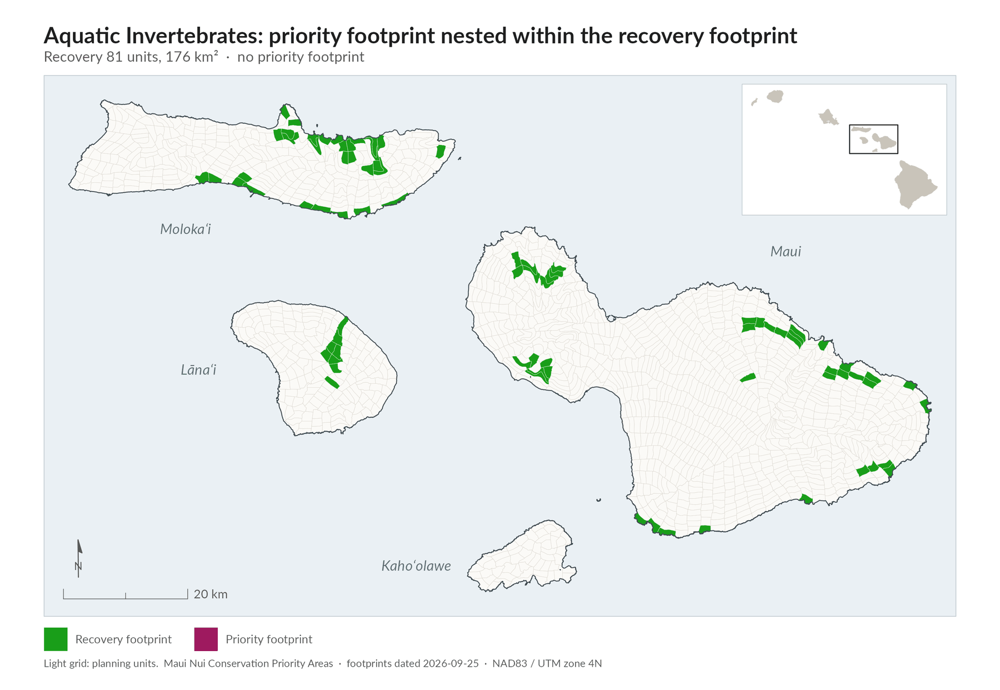
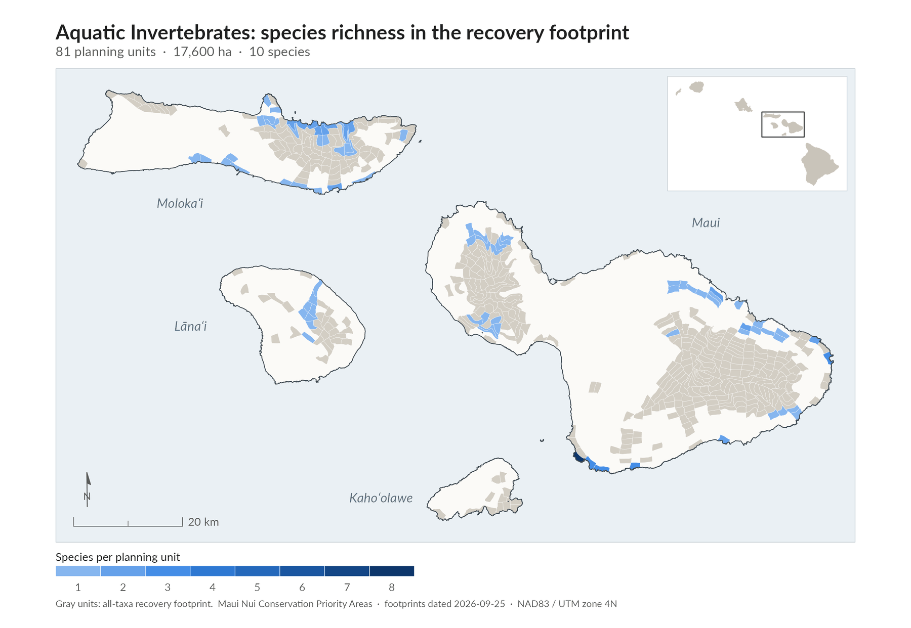
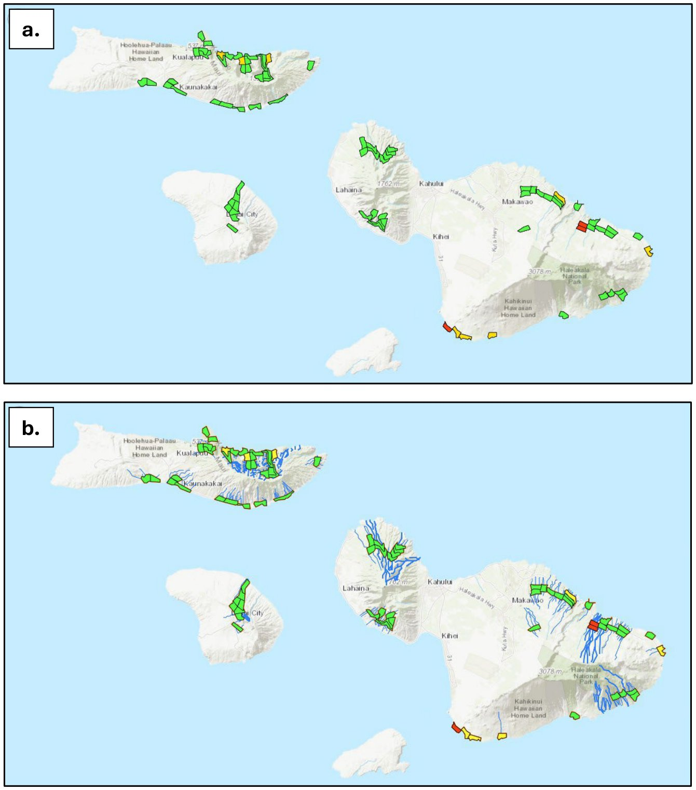
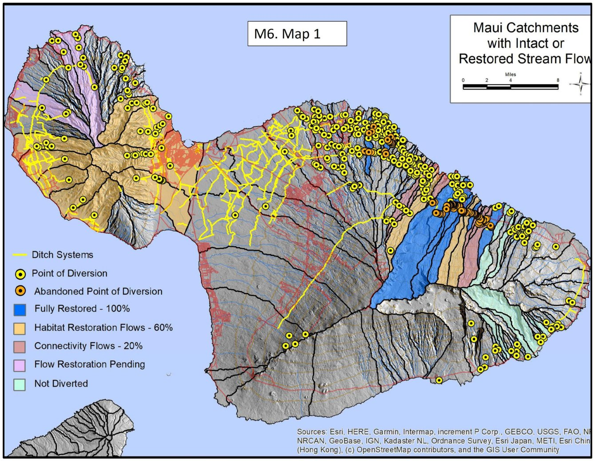

The species
The group combines two very different kinds of habitat. Seven species live in anchialine pools. The other four are more often found in streams, seeps or wetlands.plan p.70, lines 2866-2867 Anchialine pools are landlocked water bodies with an underground connection to the ocean through porous volcanic rock. They are found in only a few parts of the world and support unique animals.plan p.89, lines 3577-3580
- Hawaiian damselflies (Megalagrion). Three at-risk species, all endangered: the flying earwig Hawaiian damselfly (M. nesiotes), the Pacific Hawaiian damselfly (M. pacificum) and the orangeblack Hawaiian damselfly (M. xanthomelas).plan Table 21 p.71; App 3 common names
- Anchialine pool shrimp and other crustaceans. Seven species, including the endangered anchialine pool shrimp Procaris hawaiana.plan Table 21 p.71 (asterisked species); App 3
- Freshwater pond snails (Lymnaeidae). There is currently not enough information to map recovery habitat for them.plan p.72, lines 2942-2945
At-risk aquatic invertebrates of Maui Nui (plan Table 21). "Known occupied PUs" is the number of planning units (about 2 km² each) with a known wild population. The recovery columns give the plan's entries for species with interim or full recovery goals. * = occurs in anchialine pools. E = endangered. <!-- src: plan pp.70-71, Table 21, lines 2875-2900 -->
| Species | Known occupied PUs | ESA | Imminent extinction | Interim recovery | Full recovery | Species-specific surveys |
|---|---|---|---|---|---|---|
| Antecaridina lauensis* | 1 | 1 | ||||
| Calliasmata pholidata* | 1 | 1 | ||||
| Halocaridina rubra* | 7 | 7 | ||||
| Lymnaeidae spp. | 0 | 1 | ||||
| Megalagrion nesiotes | 2 | E | X | 4 | ||
| Megalagrion pacificum | 27 | E | 46 | |||
| Megalagrion xanthomelas | 18 | E | 40 | |||
| Metabetaeus lohena* | 7 | 7 | ||||
| Palaemonella burnsi* | 1 | 1 | ||||
| Pele ramseyi* | 1 | 1 | ||||
| Procaris hawaiana* | 1 | E | 1 | |||
| Total (11) | 4 | 1 | 5 | 5 | 1 |
Status and trends
Most of these species are known from very few places. Five of the anchialine species are known from a single planning unit each.plan Table 21 p.71 The plan does not give population sizes or trends for the group.
Threats
- Habitat loss, including reduced stream flow where water is diverted.plan p.70 lines 2849-2850; p.75 lines 3041-3044
- Aquatic invasive species: introduced fish and frogs (vertebrates) and shrimp (invertebrates) that prey on native species.plan p.70, lines 2849-2851
- Feral pigs, ants and other non-native insects, for the flying earwig Hawaiian damselfly.plan p.71, lines 2916-2918
- Natural disasters and climate change, which threaten species confined to very small areas.plan p.71, lines 2918-2920
Recovery strategy
Emergency action: the flying earwig Hawaiian damselfly
Megalagrion nesiotes is the only aquatic invertebrate facing imminent extinction. It is a dark-colored, weak flier of deep forest that usually rests on vegetation and on steep, moist, fern-covered banks. Its young (naiads) are thought to live on land or partly on land, in damp leaf litter. It is listed as endangered and historically was found only on Maui and Hawaiʻi Island, with a single population on each.plan p.71, lines 2910-2916
Actions needed: protect the known site from ungulate damage, prevent predation by invasive species, and monitor at least once a year.plan p.71, lines 2923-2924 The plan also calls for preventing the introduction of aquatic invasive species to the site.plan p.70, lines 2852-2855
Protecting the only known Maui Nui population of Megalagrion nesiotes is the group's first emergency priority.plan Exec Summary p.viii lines 289-291; p.70 lines 2852-2855
Goals
Early planning aimed for 10 populations of each species. These targets were adjusted for species found on several islands and for how much habitat is available. As a result, five species should be able to reach full recovery goals, five have interim recovery goals of one population, and one has no identified recovery area.plan pp.71-72, lines 2930-2934
Recovery footprint
Aquatic invertebrates followed the plan's expert-led pathway. The Aquatic Invertebrate Team and other species experts drew the recovery footprint directly, without an algorithm.plan p.70 lines 2869-2872; App 1 p.A1-5 lines 5107-5112 They used occurrence data, recovery plans, species reports, Hawaiʻi's State Wildlife Action Plan and scientific literature to map a recovery footprint for 10 of the 11 species.plan p.72, lines 2936-2939 Expert-led delineation was used because the group has few focal species and strong existing expert knowledge.plan App 1 p.A1-5, lines 5110-5112
The footprint covers the interim recovery habitat needs of 5 species and the full recovery needs of 5 species. It does not yet include freshwater pond snails (Lymnaeidae), for which information is lacking.plan p.72, lines 2941-2945 Delineation was done at the watershed scale, and planning units were then linked to named streams and diversions to support implementation.plan App 1 p.A1-5, lines 5128-5130 Streams, wetlands and anchialine pools are mapped alongside the footprint to show the different landscape view these species need.plan p.72, lines 2946-2950
The plan's map also shows priority implementation areas (yellow) and initial implementation areas (red) within the footprint.plan p.73, Figure 15 caption, lines 2962-2964 The plan does not state how many planning units are in the aquatic recovery footprint or its priority areas.plan Ch 6 g (no figure given); see notes/groups2.md


Map as printed in the plan (Figure 15)Details

Restoring habitat
Restoring and managing habitat for all 11 species means managing the recovery footprint to:plan p.70, lines 2856-2864 1. Set and keep minimum instream flows, without helping invasive aquatic species spread. 2. Control invasive aquatic species. 3. Manage wetland habitats for at-risk species. 4. Control invasive invertebrate species. 5. Build and maintain ungulate fencing.
The plan also calls for future tools for rare plants and invertebrates.plan p.70, line 2865
Priority conservation actions
The plan's action prioritization (a modified Priority Threat Management, or PTM, analysis, led by UH Mānoa) assessed three aquatic subgroups: Megalagrion damselflies, Procaris (anchialine pool shrimp) and Lymnaeidae (freshwater snails). Combined, aquatic invertebrates may reach an average chance of persistence above 50 percent.plan p.73, lines 2969-2972; Exec Summary p.v line 151 Megalagrion and Lymnaeidae did best under Strategy 25, a plant- and invertebrate-focused combination. Procaris did slightly better (by one percentage point) under the bird-focused Strategy 27.plan p.73, lines 2975-2978
The three subgroups respond differently, so the plan suggests that separate assessments may suit them better than one combined aquatic strategy:plan p.75, lines 3021-3036 - Procaris responds within a narrow range (a 12-point spread). Only one strategy (S6) gives a large benefit; the others add just 1 to 4 percentage points over no action. - Lymnaeidae also have a narrow range (13 points) and no standout strategy. Four strategies cluster at 30 to 33 percent persistence (S6, S7, S8 and S13). - Megalagrion has a 24-point spread. Three strategies add 10 or more points over no action (S6, S7 and S8), and two add 20 or more (S12 and S13).
All three subgroups need Strategy 6, stream and wetland habitat management, and it is arguably the most important strategy to implement first.plan p.75, lines 3038-3041
Strategy 6 includes two tasks that matter for all three subgroups:plan p.75, lines 3041-3055 - Fix stream barriers and diversions across East Maui where stream flow is reduced and lateral entrainment is possible. Whenever a barrier or diversion is removed or fails, assess whether to install a barrier that lets water flow downstream but stops invasive species moving upstream. The plan recommends evaluating existing barriers and diversions on key streams soon, before structures fail or are removed. - Remove invasive species from, or keep them out of, lowland streams below 366 m (1,200 ft) across Maui Nui, with continuous monitoring to keep streams and waters free of them.
Next steps for each subgroup:plan pp.75-76, lines 3057-3082 - Megalagrion: S3 (future ungulate fences), S5 (terrestrial habitat management), S7 (invasive vertebrate pest control), S8 (invasive invertebrate pest control), S12 (current tools for rare plants and invertebrates) and S13 (future tools). - Lymnaeidae: S7, S8 and S13, plus foundational S3 and S5 to keep habitat quality high. - Procaris: no clear next step after S6, because other single strategies give only small gains. Either combination strategy, S25 or S27, gives more than a 50 percent chance of persistence.

Benefits of single strategies for the three aquatic subgroups (plan Table 22)Details
Persistence is the estimated percent chance that the subgroup persists if that strategy is implemented. S1 is no action. "Seq." is the suggested order of implementation ("Medium" marks unranked medium actions). The column headings give overall persistence if combination strategies S25 and S27 are implemented: 59 percent for Megalagrion, 59 percent for Procaris and 52 percent for Lymnaeidae.plan p.74, Table 22, lines 2988-3017
Benefits of single strategies for Megalagrion, Procaris and Lymnaeidae (plan Table 22)
| Strategy | Description | Megalagrion % | Seq. | Procaris % | Seq. | Lymnaeidae % | Seq. |
|---|---|---|---|---|---|---|---|
| S1 | No action | 27 | 29 | 20 | |||
| S2 | Current ungulate fences | 31 | 32 | 23 | |||
| S3 | Future ungulate fences | 34 | 3 | 33 | 25 | ||
| S4 | Fenceless ungulate control | 34 | 31 | 22 | |||
| S5 | Habitat management | 36 | 4 | 31 | 27 | ||
| S6 | Wetland management | 43 | 1 | 41 | 1 | 30 | 2 |
| S7 | Vertebrate predator control | 39 | 31 | 30 | 4 | ||
| S8 | Invertebrate predator control | 38 | 2 | 31 | 33 | 1 | |
| S9 | Current predator fences | 29 | 30 | 20 | |||
| S10 | Future predator fences | 32 | 30 | 20 | |||
| S11 | Landscape rat control | 31 | 30 | 24 | |||
| S12 | Current plant/invertebrate tools | 47 | Medium | 30 | 28 | ||
| S13 | Future plant/invertebrate tools | 51 | Medium | 33 | 33 | 3 | |
| S14 | Current avian disease | 27 | 30 | 20 | |||
| S15 | Future avian disease | 27 | 30 | 20 | |||
| S16 | Infrastructure minimized | 31 | 33 | 24 | |||
| S17 | Vertebrate rehabilitation | 27 | 30 | 25 |
How these compare with the plan's combined tables. Table 26 and Appendix 2 give feasibility-adjusted values for the same subgroups: damselflies reach 54 percent under S25, anchialine pool shrimp 53 percent under S26 and S27 (52 percent under S25), and freshwater snails 47 percent under S25.plan p.85 Table 26; App 2 Table 1 p.A2-15 The plan notes that freshwater snails are one of the groups that do not reach 50 percent persistence even with S25 and S27, once feasibility is accounted for.plan p.84, lines 3324-3327 In Appendix 2, the damselfly group also includes two Megalagrion species that the plan lists as Terrestrial arthropods (M. jugorum and M. molokaiense).plan App 2 Table 1 p.A2-20; App 7 p.A7-4
Anchialine pools in S6. Strategy 6 also includes protecting anchialine ponds across Maui Nui. This means including them in protected areas or shielding them from development through zoning or other means, and removing invasive species from them.plan App 2 p.A2-31, lines 6255-6258
Surveys and data gaps
- Freshwater pond snails (Lymnaeidae) have no identified recovery area. They are assigned to species-specific surveys.plan p.72 lines 2933-2934; Table 21 p.71
- Surveys are part of the emergency response for Megalagrion nesiotes.plan Ch 5 Table 2 p.21, lines 1054-1055
Monitoring and research needs
- Monitor the Megalagrion nesiotes population at least once a year.plan p.71, lines 2923-2924
- Monitor lowland streams continuously to keep them free of invasive species.plan p.75, lines 3053-3055
- Evaluate existing barriers and diversions on key streams, and plan for them before they fail or are removed.plan p.75, lines 3047-3050
- Develop new tools to control invasive aquatic species and ants, under S13.plan p.86, lines 3471-3473